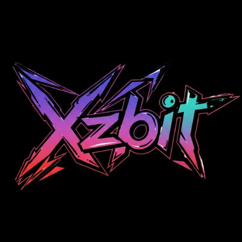

XZBIT LABS · MARKET INTELLIGENCE
Intelligence 7.0
Radar automático de riscos, DeFi e descobertas
AGUARDANDO COLETA
Dados rastreáveis. A coleta ocorre no GitHub Actions mesmo com o navegador fechado. Última atualização registrada: —
Sentimento · Fear & Greed
—
Sem coleta
TVL reportado · redes
—
DefiLlama • indicador, não fluxo
Eventos monitorados
—
Histórico disponível
Fontes operacionais
—
Entre quatro coletores gratuitos
RADAR DE EVENTOS CONFIRMÁVEIS
Aguardando a primeira coleta automática.
TRANSPARÊNCIA DAS FONTES
Ainda não há coleta registrada.
Uma fonte pode falhar temporariamente. Dados antigos não serão apresentados como atuais.
RADAR DEX · TOKENS PROMOVIDOS
Atenção: boosts são promoções pagas, não recomendações de investimento.
Aguardando dados.
MAIORES REDES POR TVL
Aguardando dados.
DA COLETA AO RELATÓRIO XZBIT
Página 1 · Panorama
Fear & Greed com timestamp e tendências históricas. Preços de BTC/SOL/ouro ainda requerem fontes dedicadas.
Página 2 · Riscos
CISA KEV e TVL das redes com evidência oficial. Uma vulnerabilidade não prova ataque bancário.
Página 3 · Radar Alpha
DEX identifica candidatos a investigar. Promoção paga não é sinal de valorização.
GeoInspector: este MVP não afirma causalidade, não inventa preços e não envia alertas especulativos. Horários e fontes são mostrados para auditoria.